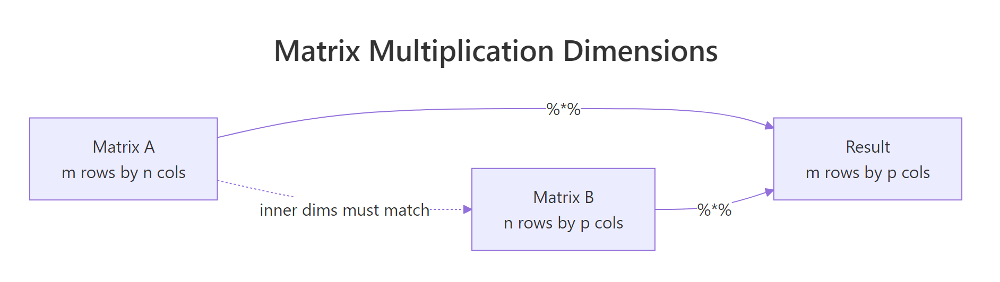
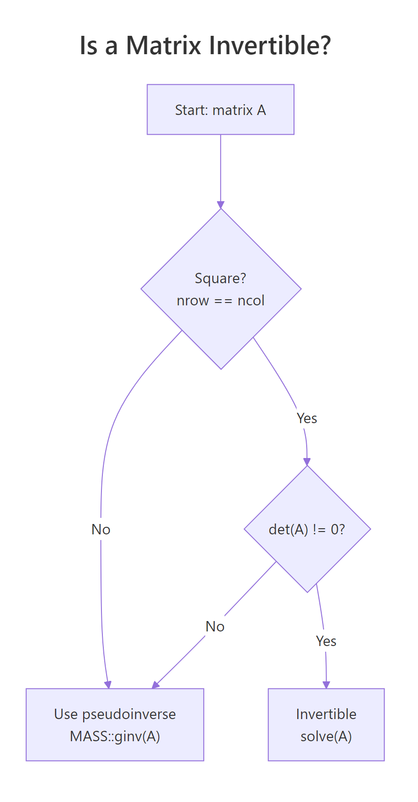
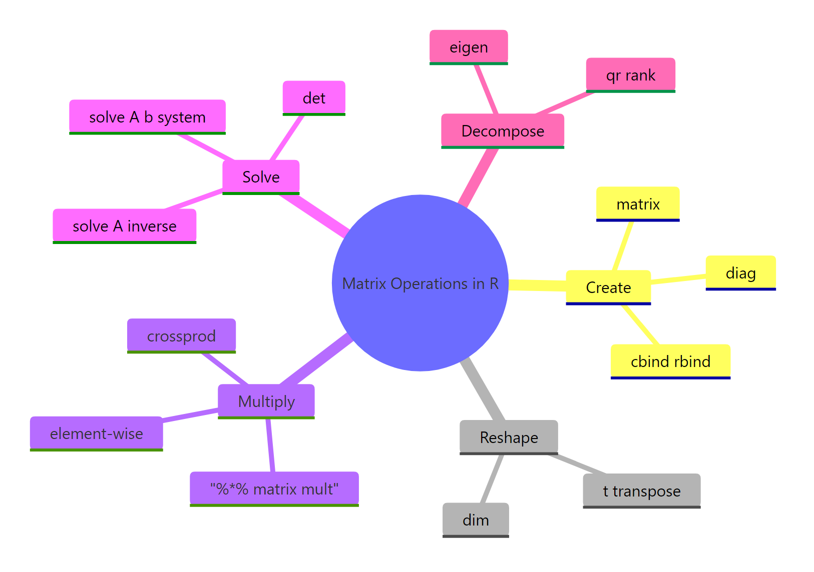

Matrix Operations in R: Create, Multiply, Invert & Transpose for Statistics
Matrix operations in R are the linear algebra building blocks behind regression, PCA, and most multivariate methods. You create matrices with matrix(), transpose with t(), multiply with %*%, and invert with solve(), all in base R, no extra packages needed.
How do you create a matrix in R?
Most stats methods boil down to manipulating a rectangular grid of numbers. In R, that grid is a matrix object: a vector of values plus a dim attribute that tells R how many rows and columns to draw. Once you can build one, every operation that follows reads like ordinary arithmetic. We will start with the smallest useful matrix, a 2-by-3 grid, and inspect what R gives back.
The matrix() function takes a vector of values and a target shape. Pass nrow or ncol (or both) and R fills the grid in column-major order by default.
Notice how 1:6 filled the matrix down the first column, then the second, then the third. That is column-major order, the same convention Fortran and most numerical libraries use. dim(A) confirms the shape: 2 rows, 3 columns. From here, every operation we cover treats A as one block of numbers.
If you would rather fill across rows, set byrow = TRUE. This is mostly cosmetic for input, but it can make small matrices easier to type out by hand.
Same six values, different arrangement. The underlying storage is still column-major; byrow only affects how the input vector is mapped during construction. Once built, a matrix knows nothing about how you typed it.
dimnames = list(c("r1","r2"), c("c1","c2","c3")) to matrix() and your output prints with labels, which is invaluable when you have a design matrix with predictor names like intercept, mpg, wt.Try it: Build a 3-by-3 matrix ex_mat from the values 1:9, filled by row. Print it.
Click to reveal solution
Explanation: byrow = TRUE walks across the first row before moving to the second, matching how you would write the matrix on paper.
How does matrix multiplication work in R?
Two matrices multiplied together encode a transformation: rotate, project, regress, predict. R offers two very different multiplication operators, and mixing them up is the most common bug for newcomers. The element-wise * multiplies corresponding cells; the matrix product %*% performs the dot-product-of-rows-and-columns operation from linear algebra. The first works on equal shapes; the second works when the inner dimensions match.
Let's see both side by side on a pair of 2-by-2 matrices.
The element-wise product just multiplied each pair of cells: cell (1,1) got 1 * 5 = 5, cell (2,2) got 4 * 8 = 32. The matrix product, by contrast, sums products across a row of M and a column of N: cell (1,1) is 1*5 + 3*6 = 23. Whenever you mean linear algebra, you almost always want %*%.
For the matrix product to be defined, the number of columns in the first matrix must equal the number of rows in the second. The result inherits the outer dimensions.

Figure 1: The inner dimensions must match for %% to work; the outer dimensions become the result's shape.*
* is not matrix multiplication. Writing A * B when you meant A %*% B will silently give you the wrong answer if the shapes happen to match, or a recycling error if they don't. Many regression bugs trace back to this single character.In statistics you very often want the gram matrix t(X) %*% X, the cross-products of every column with every other column. R provides a faster, more numerically careful shortcut: crossprod(X).
crossprod() is mathematically identical to t(X) %*% X but skips the explicit transpose and uses BLAS routines tuned for symmetric outputs. On a 10,000-row design matrix, the saving is dramatic. Its sibling tcrossprod(X) computes X %*% t(X), useful for kernel methods.
Try it: Multiply the 2-by-3 matrix A (from the first section) by its transpose to get a 2-by-2 result. Use %*% directly with t().
Click to reveal solution
Explanation: A is 2x3 and t(A) is 3x2, so A %*% t(A) is 2x2. Cell (1,1) is 1*1 + 3*3 + 5*5 = 35.
How do you transpose a matrix in R?
Transposing a matrix flips it across its main diagonal: row 1 becomes column 1, row 2 becomes column 2, and so on. It is the single most common manipulation in statistics because regression, ANOVA, and PCA are built on t(X) %*% X and similar expressions. R gives you t() for the job.
The 2-by-3 matrix A flipped to become a 3-by-2 matrix. Row 1 of A, (1, 3, 5), is now column 1 of At. The shape swap is automatic; t() is one of those rare R functions that does exactly one thing and does it cleanly.
Why does this matter for stats? Take a tiny design matrix with an intercept column and one predictor. The product t(X) %*% X gives the sums and sums-of-squares that define every element of the normal equations.
The result is a 2-by-2 symmetric matrix. The top-left 4 is the count of observations, the 20s are the sum of x, and 120 is the sum of x^2. Every regression formula starts here, including the closed-form solution we will use in the Putting It All Together section.
t(X) %*% X is symmetric and stores all the second-moment information about your predictors. Its diagonal holds sums of squares; its off-diagonal holds sums of cross-products. That is why it appears in regression, PCA, and almost every multivariate technique.Try it: Create a 4-by-2 numeric matrix ex_M of your choosing and compute its transpose ex_Mt. Confirm that dim(ex_Mt) is c(2, 4).
Click to reveal solution
Explanation: t() swaps the dimensions, so a 4-row 2-column matrix becomes a 2-row 4-column matrix.
How do you invert a matrix in R?
The inverse of a matrix A, written A^-1, satisfies A %*% A^-1 = I, where I is the identity matrix. In statistics, the inverse appears in the closed-form regression coefficient (X'X)^-1 X'y and in computing covariance matrices for parameter estimates. R uses solve() for both inverting matrices and solving linear systems.
Let's invert a small invertible matrix and verify by multiplying it back.
solve(B) returned the inverse. Multiplying B by its inverse gave back the 2-by-2 identity matrix, confirming the inversion worked. We rounded to 8 decimals because floating-point arithmetic produces values like 1e-17 instead of exact zeros.
In practice, you almost never want to compute an inverse just to multiply it by a vector. If your goal is to solve A x = b, pass b as the second argument to solve(). R will use a more accurate and faster algorithm internally.
solve(A_sys, b_sys) returned the vector x such that A_sys %*% x = b_sys. Multiplying back recovers the original b_sys, so the answer is correct. Internally R applies LU decomposition with partial pivoting, which is both faster and more numerically stable than computing solve(A_sys) %*% b_sys.
solve(A, b) over solve(A) %*% b. The two-argument form is faster and avoids the loss of precision that comes from forming an explicit inverse. Reserve solve(A) for cases where you genuinely need the inverse matrix, like reporting a covariance of estimates.A matrix is invertible only when it is square and has a non-zero determinant. If either condition fails, solve() throws an error.

Figure 2: A matrix is invertible only if it is square and has a non-zero determinant.
A_sing has linearly dependent rows, so its determinant is 0 and it has no ordinary inverse. In real data, you usually meet this through near-singularity: a determinant close to zero. That signals a multicollinearity problem, and the practical fix is either dropping a redundant predictor or using a pseudoinverse like MASS::ginv().
MASS and call MASS::ginv(A). It returns a sensible answer even when solve() would fail, at the cost of a slightly more expensive computation.Try it: Invert this 3-by-3 matrix and verify by computing M_inv %*% M. Round to 8 decimals.
Click to reveal solution
Explanation: ex_M3 is upper triangular with non-zero diagonal entries, so its determinant is 2 * 3 * 4 = 24, well away from zero. solve() returns a clean inverse.
What other operations support statistical computing?
Beyond create, multiply, transpose, and invert, four more functions cover almost every linear-algebra need in day-to-day stats: det(), diag(), eigen(), and qr(). They show up in covariance estimation, PCA, and rank-deficiency diagnostics.
det() returns the determinant, useful as a fast invertibility check. diag() is overloaded: passing a matrix extracts its diagonal, passing a vector builds a diagonal matrix from it, and passing a single integer returns an identity matrix of that size.
det(C) returned 11, so C is comfortably invertible. diag(C) pulled out the diagonal entries (4, 3), and diag(3) constructed a fresh 3-by-3 identity. The same function does three jobs because R dispatches on the input type.
For richer structure, eigen() decomposes a square matrix into its eigenvalues and eigenvectors. On a covariance matrix, the eigenvectors point along the directions of greatest variance, which is exactly what PCA exploits.
The two eigenvalues sum to 7, which is also the trace (4 + 3) of cov_mat. The first eigenvector points in the direction of the largest variance (eigenvalue 5.56). PCA simply rotates your data onto these axes; that is the entire algorithm.
Try it: Build a 3-by-3 matrix ex_K, extract its diagonal into ex_diag_K, and compute its determinant ex_det_K. Use whatever values you like.
Click to reveal solution
Explanation: diag() pulls the main diagonal. The determinant comes out non-zero, so ex_K is invertible.
Practice Exercises
These three problems combine the operations above. They build to the regression-by-matrix-algebra example in the next section.
Exercise 1: Solve a 3x3 linear system
Use solve(A, b) to find the vector my_x that satisfies my_A %*% my_x = my_b. Verify by multiplying my_A by your answer.
Click to reveal solution
Explanation: The two-argument form of solve() is preferred over computing the inverse explicitly because it is faster and more numerically stable.
Exercise 2: Build a projection (hat) matrix and check its properties
For the matrix my_X below, build the projection matrix my_H = X (X'X)^-1 X'. Verify it is idempotent (H %*% H equals H) and symmetric (t(H) equals H). The hat matrix is what regression uses to map y onto fitted values.
Click to reveal solution
Explanation: The hat matrix projects any vector onto the column space of X. Projecting twice gives the same result as projecting once, which is what idempotence means geometrically.
Exercise 3: Compare manual coefficients with lm()
Generate my_y and my_X2 below, compute the least-squares estimate my_beta = (X'X)^-1 X'y by hand, then fit the same model with lm() and check the coefficients match.
Click to reveal solution
Explanation: The closed-form OLS solution and lm() give identical answers because lm() solves exactly the same equation, just with a more numerically stable QR decomposition under the hood.
Putting It All Together: regression by matrix algebra
To see every operation working in concert, fit a linear regression on mtcars using only matrix operations. We model mpg as a function of wt and hp. The closed-form solution is:
$$\hat{\beta} = (X^T X)^{-1} X^T y$$
Where:
- $X$ = the design matrix (intercept column plus predictors)
- $y$ = the response vector
- $\hat{\beta}$ = the estimated coefficients
The hand-computed coefficients match lm() to the last decimal. Building it from matrix primitives makes the formula concrete: every regression you have ever fitted is exactly this expression, dressed up with diagnostics. Production code should still call lm(), it uses QR decomposition for numerical stability, but knowing the matrix recipe lets you debug strange results, build models in languages without a built-in regression, and read papers without skipping the math.
Summary
The five families of matrix operations cover almost everything statistics asks of linear algebra.

Figure 3: The five families of matrix operations every R user should know.
| Operation | R function | When to use | Statistical use case |
|---|---|---|---|
| Create | matrix(), cbind(), rbind() |
Building a grid from raw values | Design matrices, contrast matrices |
| Transpose | t() |
Swap rows and columns | Forming X'X in regression |
| Multiply | %*%, crossprod() |
Combine two matrices linearly | Predictions, covariance computation |
| Invert / solve | solve(A), solve(A, b) |
Reverse a transformation, solve a system | OLS coefficients, parameter SEs |
| Decompose | det(), diag(), eigen(), qr() |
Inspect structure | Invertibility, PCA, rank checks |
A few rules of thumb to take away:
- Use
%*%for matrix multiplication; never*. - Prefer
crossprod(X)overt(X) %*% Xfor speed and stability on large data. - Prefer
solve(A, b)oversolve(A) %*% b. - Check
det()(or even better, the smallest eigenvalue) before inverting a covariance-like matrix. - For rank-deficient problems, switch to
MASS::ginv().
matrix, t, %*%, crossprod, solve, det, diag, and eigen will carry you through 90% of statistical computing in R.References
- R Core Team, An Introduction to R, section on Arrays and Matrices. Link
- R Documentation,
solve()function reference. Link - R Documentation,
crossprod()andtcrossprod(). Link - Wickham, H., Advanced R, 2nd Edition. CRC Press (2019). Chapter 3: Vectors. Link
- UCLA OARC Statistical Methods, Matrices and matrix computations in R. Link
- Strang, G., Introduction to Linear Algebra, 5th Edition. Wellesley-Cambridge Press (2016).
- Venables, W. N. and Ripley, B. D., Modern Applied Statistics with S, 4th ed., Springer (2002). Chapter 3 covers
MASS::ginvfor rank-deficient inversion.
Continue Learning
- Linear Regression in R, see how
lm()applies these matrix ops behind the scenes, with diagnostics layered on top. - PCA in R, apply
eigen()(orprcomp()) to a covariance matrix to find the directions of maximum variance. - R Matrices, focuses on the matrix data structure itself: indexing, naming, and conversion to and from data frames.